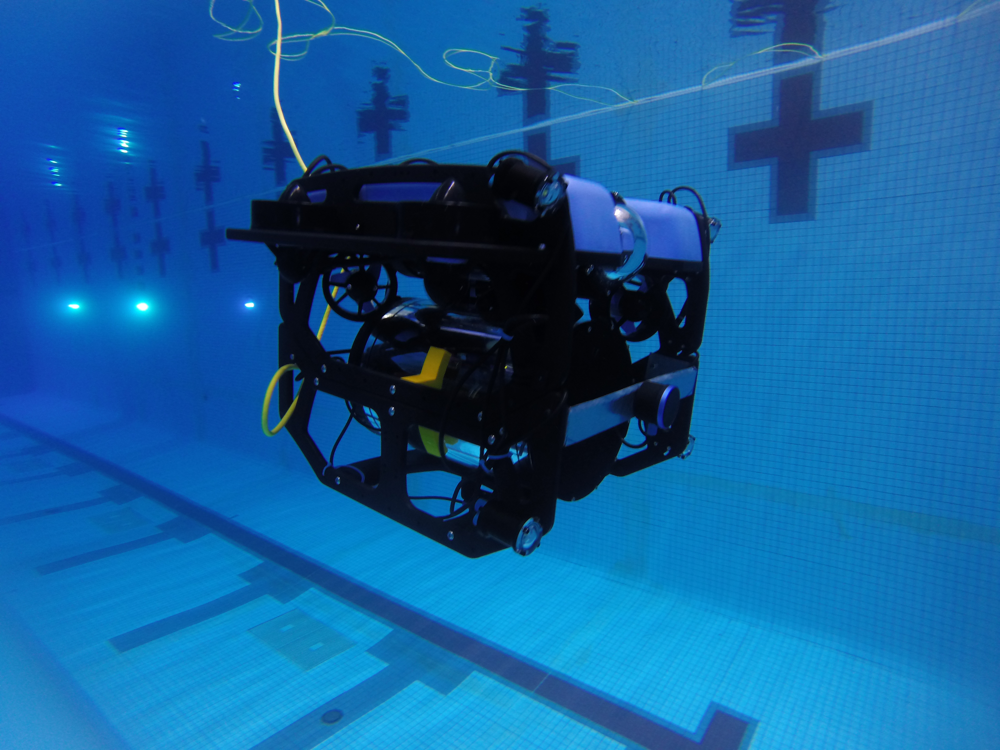
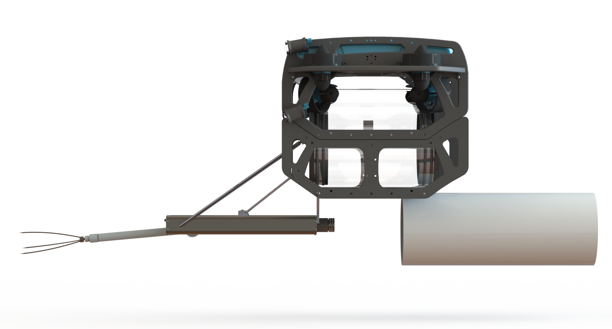
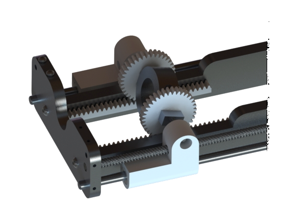

Native to the Indo-Pacific region, Lionfish are an invasive species in the Carribean Sea that were first introduced by aquarium owners irresponsibly releasing their pets into the ocean. The lionfish population continues to threaten marine life in the region and WPI has aimed to address the problem. Building off of previous teams' work, this year's focus is on developing a new harvesting system, refined identification algorithm, and autonomous navigation algorithm. These systems will be integrated into an off-the-shelf ROV to create a completely self-contained lionfish capturing robot.
I am leading the mechanical team on this poject, to design a new harvesting mechanism to spear the lionfish, and insert them into a container on the back fo the robot. The system is designed to attach to the bottom of an off-the-shelf ROV, made by BlueRobotics, which is being converted to be fully autonomous instead of remote operated. I designed the spearing mechanism, which features a rotating pneumatic cylinder.
One significant design goal for this project was the ability to store multiple fish onboard, unlike past iterations of the project by other teams. In order to do this, it was necessary to design a system to remove fish from the speartip, and store them. This is accomplished by means of a rotating assembly,as seen in the animation to the right. The carriage rides on parralel rails with teflon bushings, and is driven by a leadscrew with a waterproof brushless motor. At one end of carriage a stationary rack engages with gears mounted on the carriage to flip the spear over. Once the spear is flipped, the flat part of the carriage engages on flat rails and keeps the spear sliding straight back. The gear-train can be seen in the close-up to the right.



